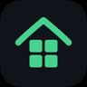

Free
$0
- Up to 3 projects
- Start / Stop / Open / Logs
- Scan, ports, mobile targets
- In-app updates

DevSuites
All your local stacks. One workspace.
Scan projects. Start API + web + mobile together. Simulators, ports, logs, and one-tap updates — from the app or the menu bar. No Docker circus.
macOS 14+ · Free for 3 projects · Notarized Developer ID
Ready
npm run start:dev
Built for the morning ritual — replace five terminals and a sticky note of ports.
Pay once. Own the workflow.
$0
$29 one-time
Free for everyone — up to 3 projects. Notarized Developer ID build.
Homebrew
A native macOS app that scans project folders, detects frameworks, and starts / stops local stacks with logs, ports, and workspaces.
Free: up to 3 projects. Pro ($29 one-time): unlimited projects, workspaces, menu bar, external port awareness.
Swift source stays private. Only the notarized Mac binary (and this site) are public.
Projects run on your machine. Update checks hit GitHub; Pro talks to Lemon Squeezy. No source is uploaded.
Same ink/mint chrome. Different jobs.